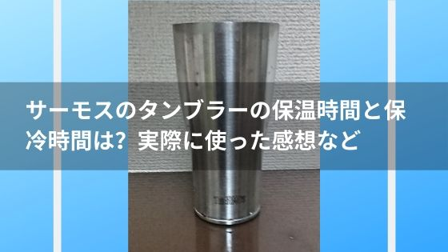

サーモスのタンブラーの保温時間と保冷時間は？実際に使った感想など
このタンブラー本当におすすめです。
サーモスの真空断熱タンブラー。一時期、話題にもなっていたので知っている方も多いと思います。
このタンブラーは保温と保冷に優れていて、
温かい物を入れればなかなか冷めない。
冷たい物を入れれば時間がたっても全然ぬるくならない。
知ってはいるけどまだ使ったことはないって方もいますよね？
そんな方のために実際に使ってみた感想や気になっていることを書いていきたいと思います。
サーモスのタンブラーについて：目次
保温時間と保冷時間はどのくらい？
保温時間：約60分
保冷時間：約420分
実際にはかってみたので詳しく見ていきます。
保温時間
測定には電気ケトルで沸かした手の沸騰したお湯で試してみました。
比較対象はよくあるマグカップです。
| コップ | 注いだ直後 | 10分後 | 30分後 | 60分後 | 90分後 |
|---|---|---|---|---|---|
| 真空断熱タンブラー | 97℃ | 80℃ | 65℃ | 54℃ | 45℃ |
| マグカップ | 84℃ | 68℃ | 55℃ | 41℃ | 35℃ |
サーモスの保温時間を約60分としたのは55℃を基準としています。
この55℃は自動販売機で販売されている缶コーヒーの温度です。
普通のマグカップでは55℃になるまで30分でしたので2倍の保温性能があるということですね。
保冷時間
測定方法は氷と水を並々と注いでみました。この氷が溶けきるまでの時間をはかりました。
比較対象はよくあるガラスのコップです。
| コップ | すべて溶けた時間 |
|---|---|
| 真空断熱タンブラー | 420分（7時間） |
| ガラスのコップ | 60分（1時間） |
7時間は本当に驚きでした。部屋の温度も26℃くらいあり暑めでした。
マグカップは1時間だったので7倍の保冷性能ということになりますね。
氷がとけないので薄まらず、ずっとおいしい！
水滴がつかないって本当？
これは本当です。多少つかないとかそういうレベルではなく、全くつくことはないです。
触っても熱くないって本当？
これも本当です。本当にありがたい機能ではあるのですが、少しだけ注意してください。
手でさわって熱くないので勢いよく熱いお茶を飲むと火傷します。
そんなこと言われなくてもわかっていると思われるかもしれないですが、手で熱さを感じられない以上、唇で熱さを感知しないといけないです。
勢いよく唇につけないように火傷だけには十分注意してください。
洗うことは出来る？手入れについて知りたい
普通のコップと同じように洗うことができます。
食洗器にも対応しているので洗うのは簡単です。
鉄ではないので錆びたりもしないですね。
使い始めて５年はたっていますがまだまだ使えそうです。
飲み物以外にスープや味噌汁を入れてもいい？
もちろん、入れてもOKです！
よくポタージュを作って飲んでいます。
熱々のスープが長時間楽しめるのは本当にありがたくて重宝しています。
使っているサイズは420mlのものなのですが、340mlのものとかにしてしまうとあふれる可能性があるので注意です。
まとめ
今回はサーモスの真空断熱タンブラーについて色々ご紹介いたしました。
個人的に使っている感想ですが、やっぱり保温時間と保冷時間が長いことが一番ありがたかったです。
5年くらいずっと使っているため今では水滴がつかないのが当たり前になっているのですが、たまにペットボトルの飲み物とかを買った時に水滴がついているのを見て、ありがたさを再実感しています。
私は今の保温時間と保冷時間に満足しているので買っていないですが、蓋（ふた）も販売されており、さらに保温時間と保冷時間を長持ちさせることができます。
気になった方はぜひ試してみてくださいね。
生活の便利グッズまとめ